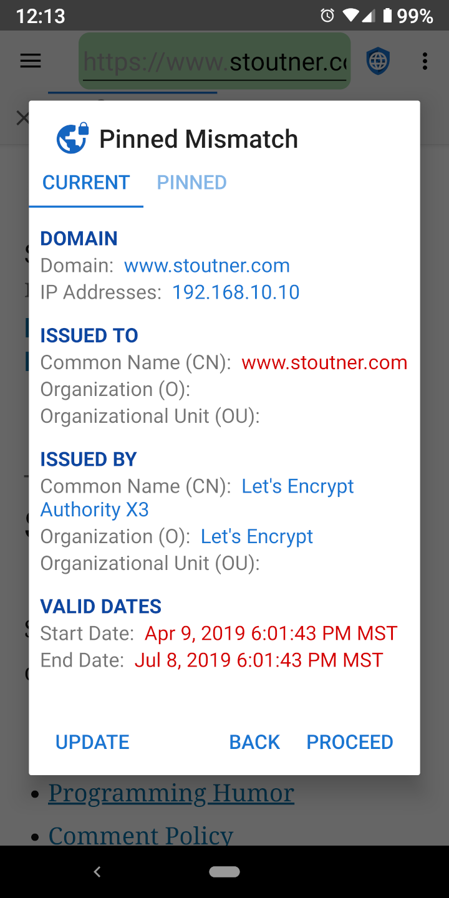
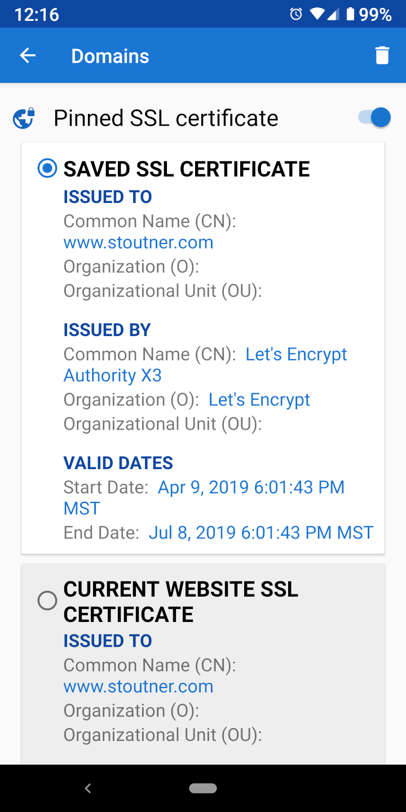

Connect with Confidence Connect with Confidence
Connect with Confidence Connect with ConfidenceWhen visiting an encrypted URL (one that begins with HTTPS), the webserver uses an SSL certificate to both encrypt the information sent to the browser and to identify the server. The purpose of the server identification is to prevent a machine located between the browser and the webserver from pretending to be the server and decrypting the information in transit. This type of attack is known as a Man In The Middle (MITM) attack. SSL certificates are generated by certificate authorities: companies that verify a server’s identity and produce a certificate for a fee. Android has a list of trusted certificate authorities, and will accept any of their certificates for any website. It isn’t supposed to be possible for an organization to acquire an SSL certificate for a domain they do not control, but in practice many governments and large corporations have been able to do so.
Pinning an SSL certificate tells the browser that only one specific SSL certificate is to be trusted for a particular domain. Any other certificate, even if it is valid, will be rejected.

SSL certificates expire on a specified date, so even pinned SSL certificates will legitimately need to be updated from time to time. As a general rule, pinning SSL certificates probably isn’t needed in the majority of cases. But for those who suspect that powerful organizations may be targeting them, SSL certificate pinning can detect and thwart a MITM attack. Privacy Browser also has the ability to pin IP addresses.

SSL certificates can be pinned in Domain Settings. Besides protecting against MITM attacks, pinning a self-signed certificate for a device like a wireless router or access point will remove the error message that is normally presented every time its website is loaded. Tapping on the active tab displays the current website SSL certificate.